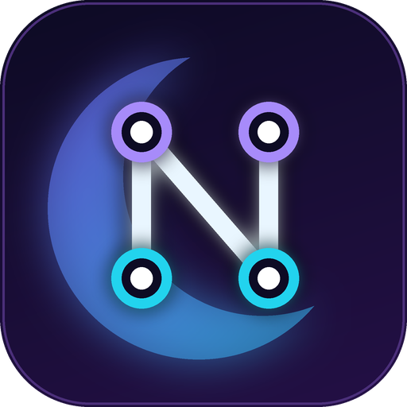

NyxApse is a free, open-source brain-training app (MIT license). Play fair, be kind, and don't cheat. Offline play needs no agreement. These terms apply if you join the optional leaderboard.
NyxApse is provided "as is", with no warranty of any kind. It is a game for fun and practice, not a medical or educational service. Your progress is saved on your device, and clearing the site data or uninstalling can erase it. Use Export in Settings to keep a backup.
The leaderboard is optional and only for people aged 16 or older, or older if the age of consent for online services in your country is higher. By joining you confirm your age and agree to these terms and to the Privacy Policy. Your nickname, avatar, division and best levels are visible to other players. Choose a nickname that is not offensive, does not impersonate anyone and does not contain personal details. Names are checked automatically, and a name that gets through can still be hidden or removed.
Cloud save is optional and has the same age rule. Your restore code is like a password: keep it private, because anyone with your nickname and code can restore your save. A lost code cannot be recovered.
Do not cheat. That includes bots, scripts, automation, modified apps and any attempt to send false scores. Do not abuse the report button. The server checks every win, and may hide you, reset your rank or division, or ban you from the leaderboard. Coins, skins and rewards are cosmetic, have no cash value, cannot be bought or sold, and may be adjusted or reset (for example, at the end of a season).
Seasons, divisions, rewards and the leaderboard itself may change or be shut down at any time. To the extent the law allows, the author is not liable for any loss arising from using the app. These terms may be updated, and the new version will be published here. Questions: open an issue on GitHub.
Last updated: November 2026. This page describes how the app works and is not legal advice.